Installing SuperCell2.0 package from gitHub
if (!requireNamespace("remotes")) install.packages("remotes")
remotes::install_github("GfellerLab/SuperCell@develop")library(SuperCell)
library(Seurat)
library(dplyr)
library(ggplot2)
library(patchwork)Bone Marrow CITE-seq data were generated in Stuart et al., 2019 and finely annotated in Hao et al., 2021. Data are available through the SeuratData R package.
options(timeout=200)
SeuratData::InstallData("bmcite")
bm <- SeuratData::LoadData(ds = "bmcite")
bm
#> An object of class Seurat
#> 17034 features across 30672 samples within 2 assays
#> Active assay: RNA (17009 features, 2000 variable features)
#> 2 layers present: counts, data
#> 1 other assay present: ADT
#> 1 dimensional reduction calculated: spcaThese data have already undergone quality control with the removal of poor-quality cells, and the cells are annotated on two levels.
head(FetchData(bm,c("celltype.l1","celltype.l2")))
#> celltype.l1 celltype.l2
#> a_AAACCTGAGCTTATCG-1 Progenitor cells Prog_RBC
#> a_AAACCTGAGGTGGGTT-1 T cell gdT
#> a_AAACCTGAGTACATGA-1 T cell CD4 Naive
#> a_AAACCTGCAAACCTAC-1 T cell CD4 Memory
#> a_AAACCTGCAAGGTGTG-1 Mono/DC CD14 Mono
#> a_AAACCTGCACGGTAGA-1 B cell Naive BLets define some settings for this tutorial.
rna.comp <- c(1:30) # components used from the dimension redcution of the RNA modality
adt.comp <- c(1:18) # components used from the dimension redcution of the Protein modality
prop.annotated.cells <- 0.5 # proportion of cell label to keep to illsutrate the semi-superveised workflow (see below)
graining.level = 75
Before identifying metacells we have to preprocess the single cell data. This includes data normalization and dimension reduction of each modality. For this we can follow a standard Seurat workflow.
DefaultAssay(bm) <- 'ADT'
VariableFeatures(bm) <- rownames(bm[["ADT"]])
bm <- NormalizeData(bm, normalization.method = 'CLR', margin = 2) %>%
ScaleData() %>% RunPCA(reduction.name = 'apca')
DefaultAssay(bm) <- "RNA"
bm <- NormalizeData(bm,normalization.method = "LogNormalize",assay = "RNA") %>% FindVariableFeatures() %>% ScaleData() %>% RunPCA()Based on this dimension reductions we can integrate protein and RNA modalities together using the WNN approach from Seurat. This step is not required for metacell identification but we will use the single-cell final UMAP embedding to visually assess metacell quality.
bm <- FindMultiModalNeighbors(
bm,
reduction.list = list("pca", "apca"),
dims.list = list(rna.comp, adt.comp),
modality.weight.name = "RNA.weight")
bm <- RunUMAP(bm, nn.name = "weighted.nn", reduction.name = "wnn.umap", reduction.key = "wnnUMAP_")
DimPlot(bm,reduction = "wnn.umap", group.by = 'celltype.l1')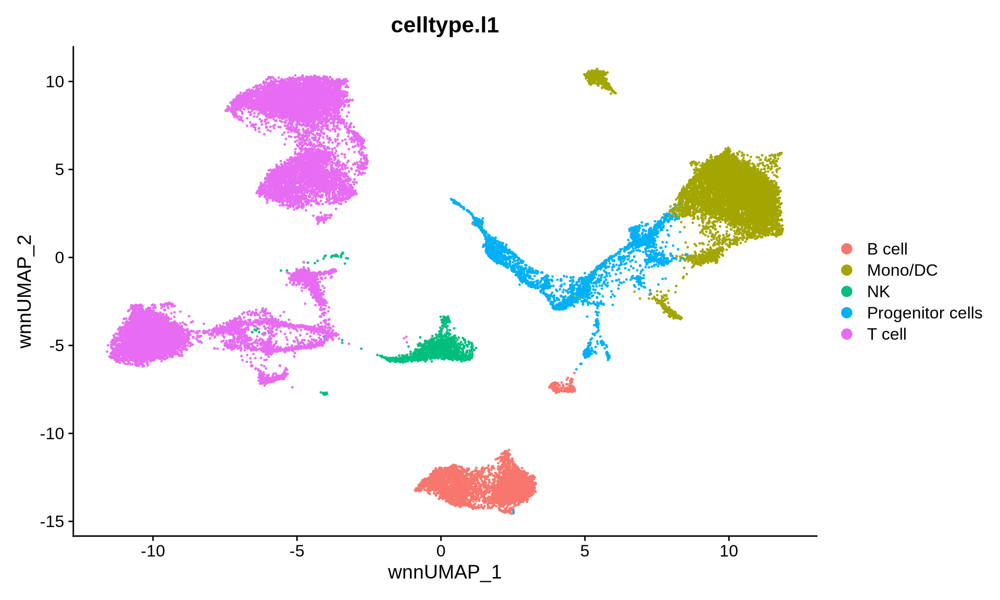
DimPlot(bm,reduction = "wnn.umap", group.by = 'celltype.l2')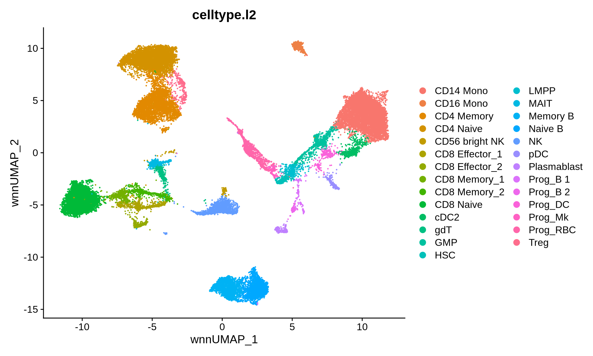
We can identify metacells based on protein and RNA modalities.
bm.mc.multi <- SCimplify_for_Seurat(
bm,
assay = c("RNA","ADT"),
reduction = list("pca", "apca"),
dims = list(rna.comp, adt.comp),
gamma = graining.level
)
#> RNA ADTSCimply_for_Seurat function gives a seurat metacell
object with aggregated (summed) raw counts for each modality. All
categorical metadata available in the single cell seurat object are also
aggregated in the resulting metacell object by assigning the metacell to
the label with the maximum absolute abundance within it.
bm.mc.multi
#> An object of class Seurat
#> 17034 features across 408 samples within 2 assays
#> Active assay: RNA (17009 features, 0 variable features)
#> 1 layer present: counts
#> 1 other assay present: ADT
head(FetchData(bm.mc.multi,c("celltype.l1","celltype.l1_purity","celltype.l2","celltype.l2_purity","size")))
#> celltype.l1 celltype.l1_purity celltype.l2 celltype.l2_purity
#> Metacell_1 B cell 1.0000000 Naive B 1.0000000
#> Metacell_2 B cell 1.0000000 Memory B 1.0000000
#> Metacell_3 T cell 0.9883721 CD8 Memory_1 0.5930233
#> Metacell_4 T cell 1.0000000 CD8 Naive 0.9964664
#> Metacell_5 T cell 0.9848485 CD4 Memory 0.9696970
#> Metacell_6 T cell 1.0000000 CD8 Effector_1 0.9761905
#> size
#> Metacell_1 242
#> Metacell_2 102
#> Metacell_3 86
#> Metacell_4 283
#> Metacell_5 66
#> Metacell_6 84The misc slot of the metacell seurat object contain information about SuperCell2.0 run that can be used for quality control such as coverage plot and direct rescaling (see below).
names(bm.mc.multi@misc)
#> [1] "metacells_hierarchy" "walktrap_clusters" "gamma"
#> [4] "membership"
#graining level used
head(bm.mc.multi@misc$gamma)
#> [1] 75
# membership vector linking single cells to metacells
head(bm.mc.multi@misc$membership)
#> a_AAACCTGAGCTTATCG-1 a_AAACCTGAGGTGGGTT-1 a_AAACCTGAGTACATGA-1
#> 301 5 149
#> a_AAACCTGCAAACCTAC-1 a_AAACCTGCAAGGTGTG-1 a_AAACCTGCACGGTAGA-1
#> 147 15 16
#metacells_hierarchy used for rescaling
head(bm.mc.multi@misc$metacells_hierarchy$merges)
#> [,1] [,2]
#> [1,] 22564 22595
#> [2,] 10466 30252
#> [3,] 12891 13231
#> [4,] 6042 13833
#> [5,] 21930 29883
#> [6,] 5677 30674After identifying the metacells, a coverage plot of the single-cell latent space (if available) can be used to quickly assessed metacell quality.
cov.multi.unsup <- DimPlotSC(bm,
bm.mc.multi,
reduction = "wnn.umap",
sc.col = "celltype.l2",
metacell.col = "celltype.l2")
cov.multi.unsup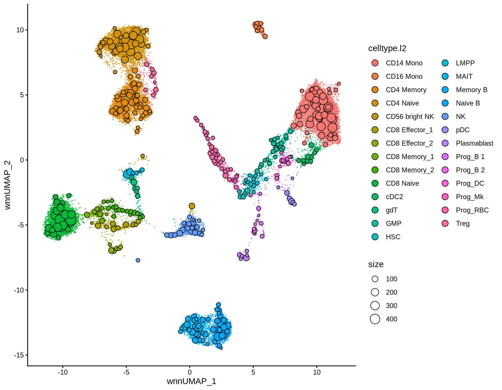
We can appreciate the reduction in dropout noise on the RNA modality by looking at UMI counts and detected genes per single-cells/metacells
bm$graining_level <- "single_cells"
bm.mc.multi$graining_level <- "metacells (g75)"
coverage_results <- rbind(FetchData(bm,c("nCount_RNA","nFeature_RNA","graining_level")),
FetchData(bm.mc.multi,c("nCount_RNA","nFeature_RNA","graining_level"))
)
p1 <- ggplot(coverage_results,aes(x= graining_level,y = nCount_RNA,fill = graining_level)) +
geom_boxplot() +
theme_bw()
p2 <- ggplot(coverage_results,aes(x= graining_level,y = nFeature_RNA,fill = graining_level)) +
geom_boxplot() +
theme_bw()
wrap_plots(p1 + NoLegend(), p2)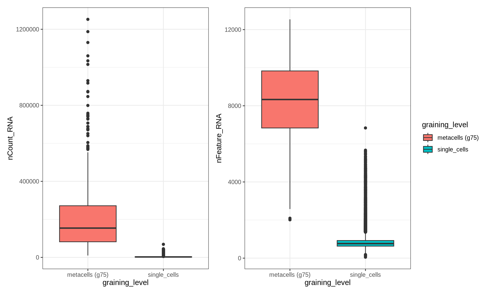
This can be further illustrated by improved correlations between RNA and protein measurements in metacells compared to single cells. To visualize these correlations we have to normalize metacell data first.
DefaultAssay(bm.mc.multi) <- 'ADT'
VariableFeatures(bm.mc.multi) <- rownames(bm.mc.multi[["ADT"]])
bm.mc.multi <- NormalizeData(bm.mc.multi, normalization.method = 'CLR', margin = 2)
DefaultAssay(bm.mc.multi) <- "RNA"
bm.mc.multi <- NormalizeData(bm.mc.multi,normalization.method = "LogNormalize",assay = "RNA")
wrap_plots(FeatureScatter(bm,feature1 = "rna_CD14",feature2 = "adt_CD14",group.by = "celltype.l1")+ NoLegend(),
FeatureScatter.SuperCell(bm.mc.multi,feature1 = "adt_CD14",feature2 = "rna_CD14",group.by = "celltype.l1"))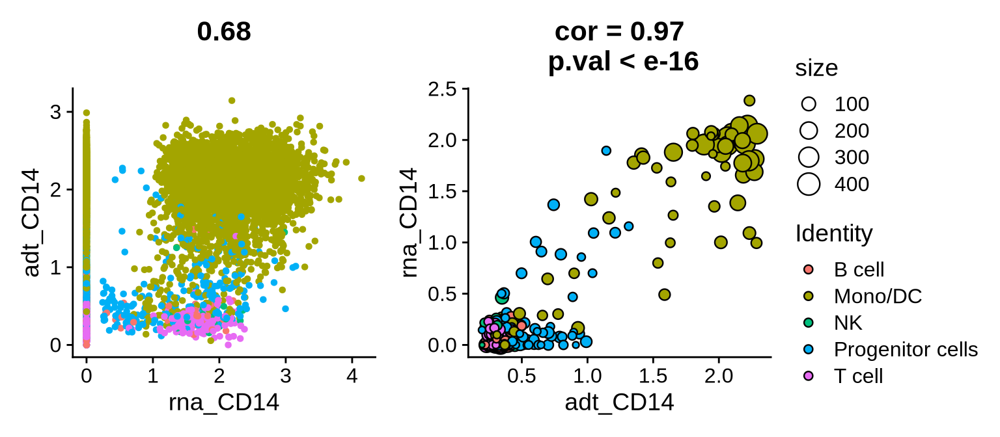
wrap_plots(FeatureScatter(bm,feature1 = "rna_CD19",feature2 = "adt_CD19",group.by = "celltype.l1")+ NoLegend(), FeatureScatter.SuperCell(bm.mc.multi,feature1 = "adt_CD19",feature2 = "rna_CD19",group.by = "celltype.l1"))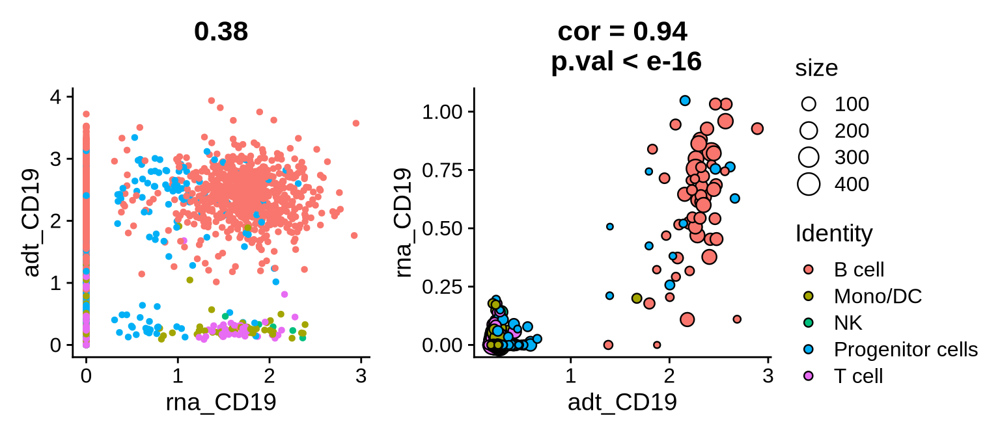
We can also identify metacells based only on one modallity (eg. RNA).
bm.mc.rna<- SCimplify_for_Seurat(
bm,
assay = c("RNA"),
reduction = list("pca"),
dims = list(rna.comp),
gamma = graining.level
)
bm.mc.rna
#> An object of class Seurat
#> 17034 features across 408 samples within 2 assays
#> Active assay: RNA (17009 features, 0 variable features)
#> 1 layer present: counts
#> 1 other assay present: ADT
cov.rna.unsup <- DimPlotSC(bm,
bm.mc.rna,
reduction = "wnn.umap",
sc.col = "celltype.l2",
metacell.col = "celltype.l2")
cov.rna.unsupSuperCell2.0 can leverage prior knowledge of the cell type in the form of a partial annotation in order to help metacell identification.
To illustrate this feature we can create a new annotation by hiding a certain amount of cell type labels.
prop.to.hide <- 0.5
bm[["partial_annotation"]] <- bm[["celltype.l2"]]
cells.to.hide <- sample(colnames(bm),
size = as.integer(prop.to.hide * ncol(bm) ))
bm[["partial_annotation"]][cells.to.hide,] <- NA
We can now use the semi-supervised multimodal workflow
bm.mc.multi.sup <- SCimplify_for_Seurat(
bm,
assay = c("RNA","ADT"),
reduction = list("pca", "apca"),
dims = list(rna.comp, adt.comp),
gamma = graining.level,
label = "partial_annotation"
)
cov.multi.sup <- DimPlotSC(bm,
bm.mc.multi,
reduction = "wnn.umap",
sc.col = "celltype.l2",
metacell.col = "celltype.l2")
cov.multi.sup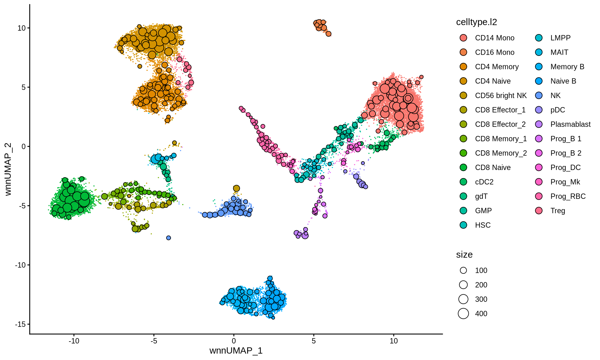
And same using only RNA.
bm.mc.rna.sup<- SCimplify_for_Seurat(
bm,
assay = c("RNA"),
reduction = list("pca"),
dims = list(rna.comp),
gamma = graining.level,
label = "partial_annotation"
)
cov.rna.sup <- DimPlotSC(bm,
bm.mc.rna.sup,
reduction = "wnn.umap",
sc.col = "celltype.l2",
metacell.col = "celltype.l2")
cov.rna.sup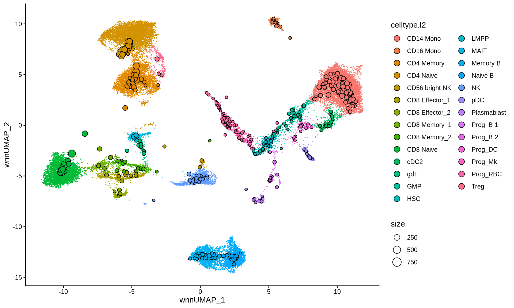
We can evaluate the different metacells workflows based on metacell purities with respect to the original single-cell annotation.
bm.mc.multi$workflow <- "unsup_multi"
bm.mc.multi.sup$workflow <- "semisup_multi"
bm.mc.rna$workflow <- "unsup_RNA"
bm.mc.rna.sup$workflow <- "semisup_RNA"
purity_results <- rbind(FetchData(bm.mc.multi,c("celltype.l2_purity","workflow")),
FetchData(bm.mc.multi.sup,c("celltype.l2_purity","workflow")),
FetchData(bm.mc.rna,c("celltype.l2_purity","workflow")),
FetchData(bm.mc.rna.sup,c("celltype.l2_purity","workflow")))
purity_results$workflow <- factor(purity_results$workflow,levels = c("semisup_multi",
"unsup_multi",
"semisup_RNA",
"unsup_RNA"))
ggplot(purity_results,aes(x= workflow,y = celltype.l2_purity,fill = workflow)) +
geom_boxplot() +
theme_bw()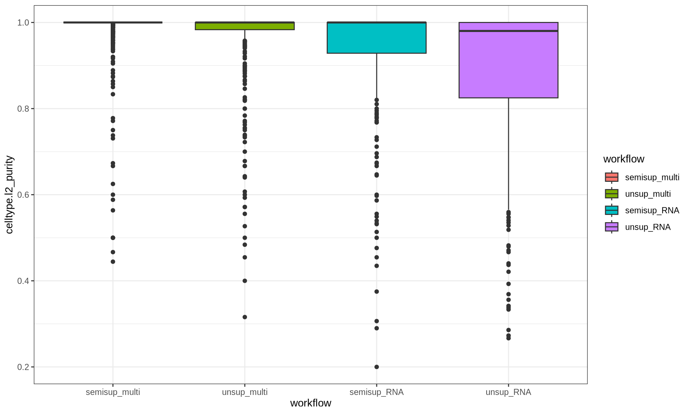
Multimodal workflow outperforms RNA-based workflow and semi-supervision using partial annotation improve metacell quality.
A metacell object can be rescaled to another graining level, without re-identifying metacells.
bm.mc.multi <- SCimplify_for_Seurat(seurat = bm,seurat.mc = bm.mc.multi,gamma = 20)
bm.mc.multi
#> An object of class Seurat
#> 17034 features across 1533 samples within 2 assays
#> Active assay: RNA (17009 features, 0 variable features)
#> 1 layer present: counts
#> 1 other assay present: ADT
DimPlotSC(bm,
bm.mc.multi,
reduction = "wnn.umap",
sc.col = "celltype.l2",
metacell.col = "celltype.l2")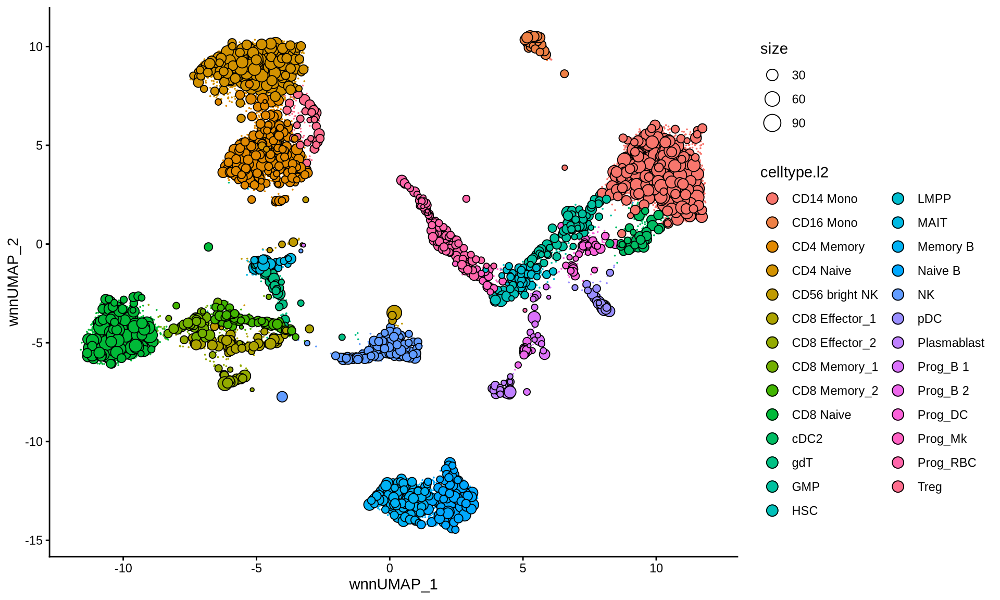
We can use the metacells for faster and lighter downstream analysis.
We use the same workflow as for single cells with first dimension reductions specific to each modality.
DefaultAssay(bm.mc.multi) <- 'ADT'
VariableFeatures(bm.mc.multi) <- rownames(bm.mc.multi[["ADT"]])
bm.mc.multi <- NormalizeData(bm.mc.multi, normalization.method = 'CLR', margin = 2) %>%
ScaleData() %>% RunPCA(reduction.name = 'apca')
DefaultAssay(bm.mc.multi) <- "RNA"
bm.mc.multi <- NormalizeData(bm.mc.multi,normalization.method = "LogNormalize",assay = "RNA") %>% FindVariableFeatures() %>% ScaleData() %>% RunPCA()Then we perform a multimodal integration of the metacells thanks to the WNN approach.
bm.mc.multi <- FindMultiModalNeighbors(
bm.mc.multi,
reduction.list = list("pca", "apca"),
dims.list = list(rna.comp, adt.comp),
modality.weight.name = "RNA.weight")
bm.mc.multi <- RunUMAP(bm.mc.multi, nn.name = "weighted.nn", reduction.name = "wnn.umap", reduction.key = "wnnUMAP_")
DimPlot(bm.mc.multi,reduction = "wnn.umap", group.by = 'celltype.l1')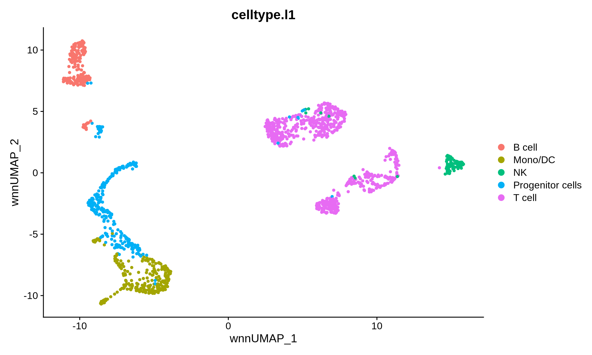
DimPlot(bm.mc.multi,reduction = "wnn.umap", group.by = 'celltype.l2')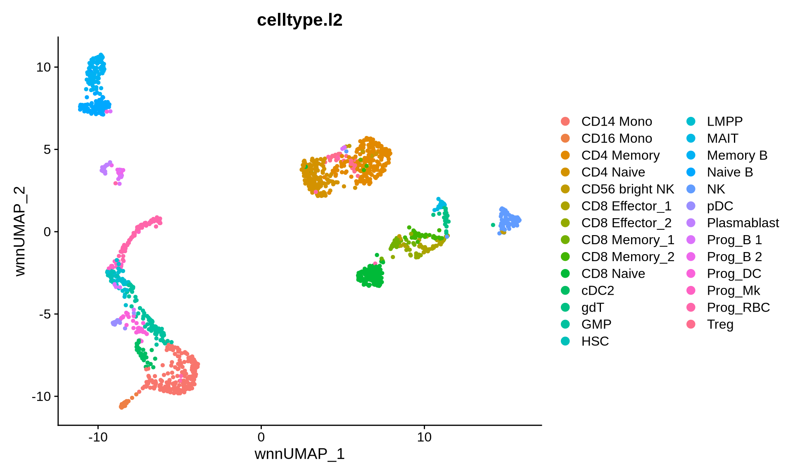
We can cluster metacells based on the WNN graph.
bm.mc.multi <- FindClusters(bm.mc.multi,graph.name = "wsnn")
#> Modularity Optimizer version 1.3.0 by Ludo Waltman and Nees Jan van Eck
#>
#> Number of nodes: 1533
#> Number of edges: 49497
#>
#> Running Louvain algorithm...
#> Maximum modularity in 10 random starts: 0.8999
#> Number of communities: 14
#> Elapsed time: 0 seconds
DimPlot(bm.mc.multi,reduction = "wnn.umap")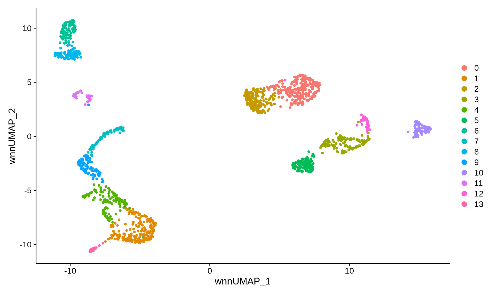
SuperCell2.0 provides a set of functions to visualize metacell data.
DimPlot.Supercell function can be used to display
metacell size in Seurat dimension plots.
DimPlot.SuperCell(bm.mc.multi,reduction = "wnn.umap", group.by = 'celltype.l1')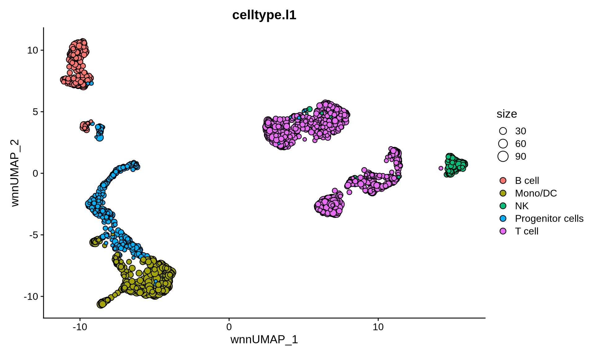
DimPlot.SuperCell(bm.mc.multi,reduction = "wnn.umap", group.by = 'celltype.l2')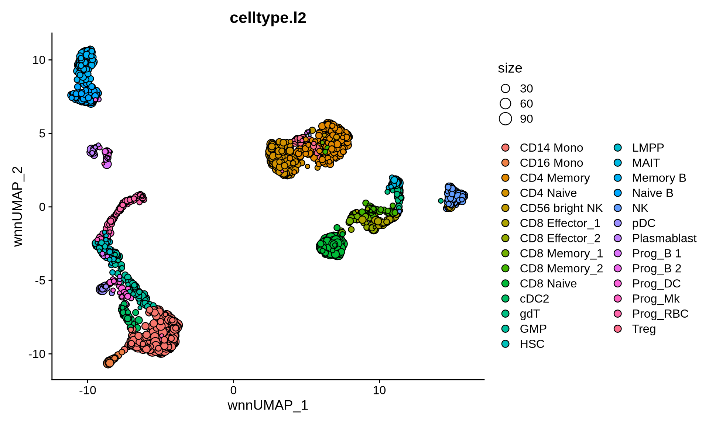
DimPlot.SuperCell(bm.mc.multi,reduction = "wnn.umap") + ggtitle("Metacell clusters")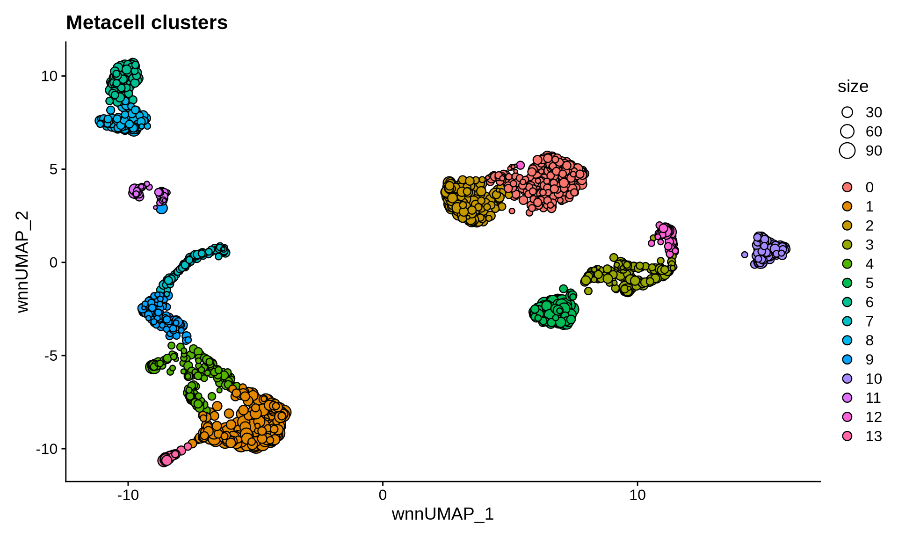
VlnPlot.Supercell function can be used for plotting
violin plot weighted by metacell sizes.
VlnPlot.SuperCell(bm.mc.multi,features = c("CD19","CD14","GNLY","CD34","FLT3","CD3G"),group.by = "celltype.l1",
ncol = 3)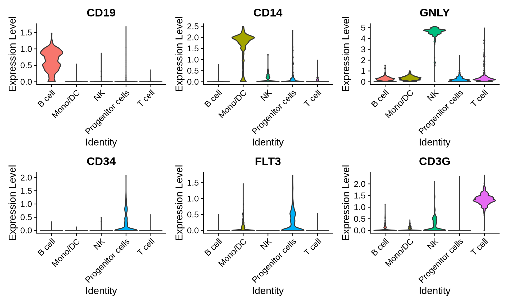
VlnPlot.SuperCell(bm.mc.multi,features = c("CD19","CD14","GNLY","CD34","FLT3","CD3G","CD4","CD8A"),ncol = 2,stack = T,fill.by = "ident",group.by = "wsnn_res.0.8",flip = T)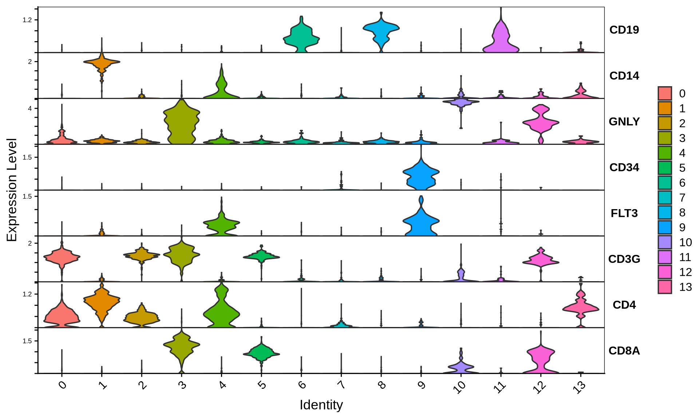